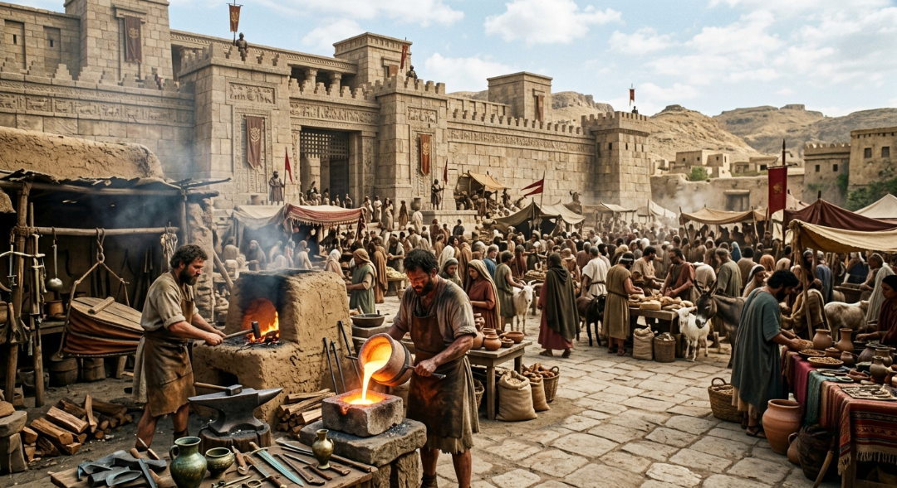
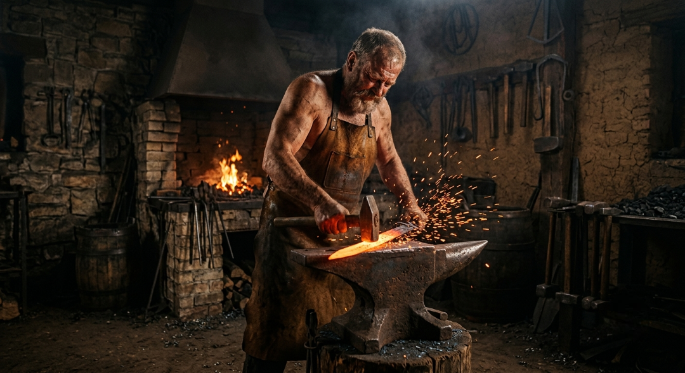
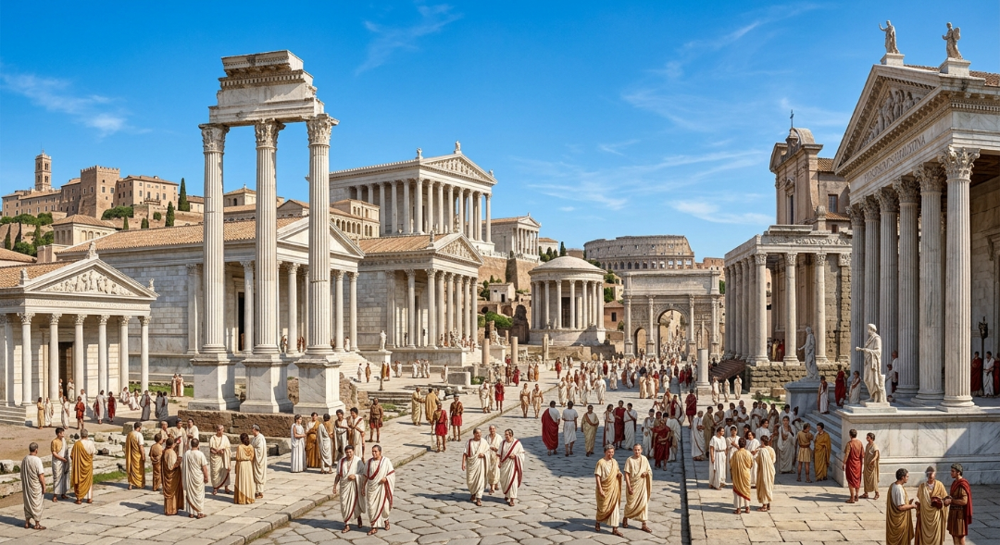
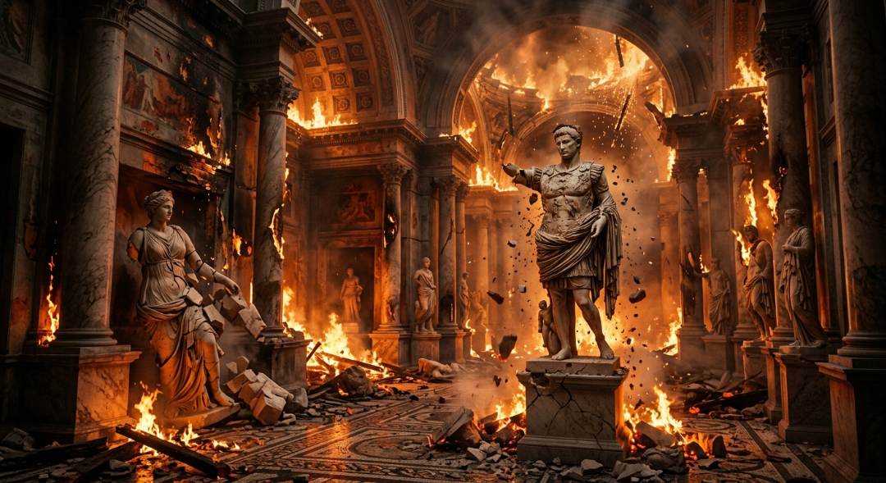
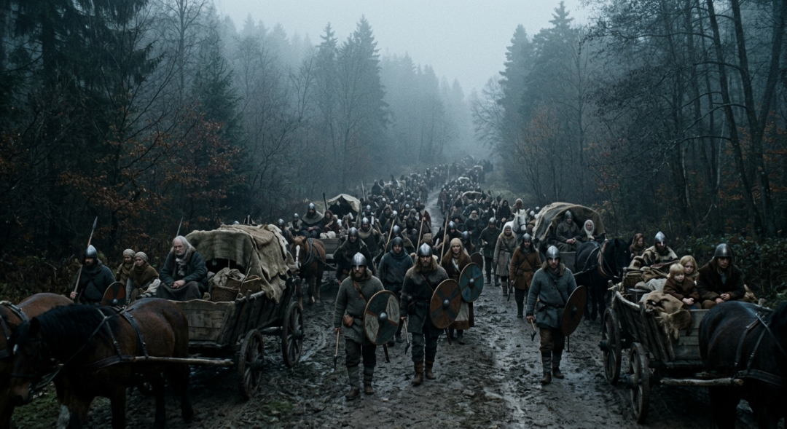

Бронзовий вік та перші імперії (3300 - 1200 рр. до н. е.)
Бронзовий вік ознаменував собою перший фундаментальний технологічний стрибок людства, коли люди навчилися плавити мідь та олово, створюючи перший штучний сплав — бронзу. Цей винахід кардинально змінив усе: від ефективності сільськогосподарських знарядь до смертоносності зброї. В родючих долинах великих річок, таких як Ніл, Тигр та Євфрат, виникли перші в історії людства могутні цивілізації — Стародавній Єгипет, Месопотамія та Мінойська культура, які назавжди залишили по собі монументальну архітектуру, перші зводи законів та писемність.
Основою життя Бронзового віку стала міжнародна торгівля на величезні відстані, адже поклади міді та олова рідко знаходилися поруч, що змушувало перші держави будувати складні логістичні мережі та дипломатичні зв'язки. Міста перетворилися на величні центри ремесел і культури, захищені масивними кам'яними стінами, всередині яких височіли палаци та зикурати. Проте ця надзвичайна взаємозалежність країн зробила їх вразливими до будь-яких глобальних змін, що згодом призвело до масштабної історичної катастрофи.
Ближче до 1200 року до нашої ери квітучий світ Бронзового віку пережив раптовий і жорстокий колапс, причини якого досі викликають палкі суперечки серед істориків. Навали таємничих "народів моря", руйнівні землетруси, тривалі посухи та внутрішні повстання призвели до одночасного падіння майже всіх великих імперій Східного Середземномор'я. Величні міста були спалені, торгові шляхи знищені, а писемність у багатьох регіонах була втрачена на століття, зануривши людство у темні віки, з яких воно вийде вже в абсолютно новій технологічній формі.

Епоха бронзи
Час виникнення першої писемності, масштабних торгових мереж та величних міст-держав, що завершився раптовим глобальним колапсом.
Залізна воля та перебудова світу (1200 - 500 рр. до н. е.)
Після руїн Бронзового колапсу людство знайшло порятунок у новому металі, який був набагато складнішим в обробці, але знаходився практично всюди — у залізі. Перехід до Залізного віку став справжньою демократизацією технологій: якщо бронза через свою дорожнечу була привілеєм еліти та професійних армій, то залізо стало доступним для звичайних ковалів, ремісників та землеробів. Нові залізні сокири дозволили вирубувати густі ліси під орні землі, а міцні плуги перетворили раніше непридатні тверді ґрунти на родючі поля.
Доступність нового металу спровокувала вибух військових технологій та появу агресивних військових імперій нової формації, серед яких найстрашнішою була Новоассирійська держава. Ассирійці першими повністю озброїли свої армії залізною зброєю, створили регулярну кінноту та винайшли інженерні облогові машини, що дозволило їм підкорити весь Близький Схід. Водночас на уламках старих культур почали підніматися нові сили — Нововавилонське царство, Фінікія з її першим алфавітом та Стародавня Греція, яка тільки починала відбудовувати свої поліси.
Залізний вік назавжди змінив демографічну карту планети, викликавши стрімке зростання населення завдяки покращенню сільського господарства. Почалася масштабна колонізація Середземномор'я, розвивалися нові релігійні та філософські течії, які пізніше назвуть "Осьовим часом". Світ став динамічнішим, жорстокішим і набагато стійкішим до криз, заклавши міцний технологічний фундамент для розквіту найбільших класичних цивілізацій, які повністю перепишуть правила світового устрою.

Залізний прорив
Початок масового освоєння заліза, що здешевило знаряддя праці, реорганізувало тогочасні армії та запустило хвилю глобальної колонізації.
Тріумф розуму, права та мармуру (500 - 300 р. до н. е.)
Класична античність стала золотим віком європейської та середземноморської цивілізацій, часом, коли філософія, мистецтво, наука та державне управління досягли неймовірних висот. Ця епоха тримається на двох величних стовпах — Стародавній Греції та Стародавньому Римі. Все почалося з грецьких полісів, які подарували світові поняття демократії, класичну архітектуру, театр та філософські школи Сократа, Платона й Арістотеля, що заклали ментальний код усієї сучасної західної цивілізації.
Після завоювань Александра Македонського, які поєднали культуру Заходу та Сходу в єдиний еліністичний простір, на історичну арену вийшов Рим. Перетворившись із маленької республіки на колосальну імперію, Рим підпорядкував собі весь відомий тоді світ — від суворих лісів Британії до пісків Месопотамії. Епоха "Pax Romana" (Римського миру) забезпечила небачену раніше стабільність, під час якої будувалися тисячі кілометрів брукованих доріг, величні акведуки, грандіозні амфітеатри та купольні храми, які стоять і до сьогодні.
Це була епоха глобалізації Стародавнього світу, де римське право стало основою юриспруденції, а латина та давньогрецька мова об'єднали мільйони людей різних національностей. Величезні торгові флоти безперервно курсували Середземним морем, яке римляни гордо називали "нашим морем", а міста досягли небаченого рівня комфорту з каналізаціями, термами та громадськими бібліотеками. Класична античність створила ідеал людської культури, який на багато століть уперед став еталоном краси, величі та цивілізаційного прогресу.

Класична античність
Епоха розквіту грецької філософії та тріумфу Римської імперії, що об'єднала Середземномор'я дорогами, правом та архітектурою.
Захід імперії та зміна віри (2326-1550 років тому)
Пізня античність стала часом грандіозної трансформації та поступового болісного згасання класичного світу під тиском внутрішніх криз та зовнішніх загроз. Величезна Римська імперія вже не могла ефективно керуватися з одного центру, тому імператор Діоклетіан розділив її на дві частини — Західну та Східну, а Костянтин Великий переніс столицю у нове розкішне місто Константинополь. Цей крок врятував Схід, але залишив старий Рим сам на сам із глибокою економічною кризою, корупцією та інфляцією, які роз'їдали державу зсередини.
Водночас відбувся найбільший релігійний переворот в історії: християнство, яке протягом трьох століть жорстоко переслідувалося і розвивалося в підпільних катакомбах, отримало офіційний статус, а згодом стало єдиною державною релігією. Стародавні язичницькі храми закривалися або перебудовувалися на християнські базиліки, Олімпійські ігри були заборонені, а класична філософія почала поступатися місцем глибокому богослов'ю. Суспільство повністю змінило свої духовні орієнтири, готуючись до життя у значно суворішому та релігійнішому світі.
Західна Римська імперія стрімко втрачала свої території, не маючи коштів на утримання легіонів та змушена була масово наймати на службу варварські племена. Фінальна точка була поставлена у 476 році нашої ери, коли німецький вождь Одоакр скинув останнього юного римського імператора Ромула Августула. Ця подія, хоч і здавалася сучасникам звичайним військовим переворотом, назавжди увійшла в історію як символічний кінець Стародавнього світу та офіційне падіння Західного Риму, яке занурило Європу в хаос.

Пізній Рим
Період поділу імперії, офіційного прийняття християнства та остаточного падіння Західного Риму під вагою внутрішніх криз.
Народження середньвічної Європи (1550-1450 років тому)
Падіння Риму відбувалося на тлі масштабного демографічного та воєнного колапсу, відомого як Велике переселення народів. Спровоковане раптовим наступом лютих кочівників-гуннів з глибин Азії та різким похолоданням клімату, це переселення змусило мільйони германських, слов'янських та кельтських племен знятися зі своїх насиджених місць і рушити в межі колишньої імперії. Вестготи, вандали, франки та англосакси лавиною пройшлися європейськими провінціями, стираючи старі кордони та засновуючи свої перші королівства на руїнах античності.
Цей період супроводжувався значним занепадом міського життя: величні римські міста порожніли, водогони руйнувалися без догляду, а колись квітучі торгові шляхи заростали травою через небезпеку на дорогах. Грамотність стала рідкістю, доступною майже виключно монахам, а колишня глобальна грошова система поступилася місцем натуральному обміну. Проте, попри поширений міф про абсолютне дикунство, варвари не просто руйнували — вони намагалися вбирати в себе римські закони, мову та релігію, створюючи абсолютно новий культурний синтез.
Велике переселення народів завершило античну епоху і стало важким пологами, в яких народилася середньовічна Європа. Саме з варварських королівств цієї доби згодом виростуть сучасні європейські нації: Франція, Англія, Іспанія та Німеччина. Античний мармуровий світ назавжди відійшов у минуле, поступившись місцем суворій, але динамічній феодальній системі, де зародилися нові правила лицарської честі, релігійної відданості та оборонної архітектури Середньовіччя.

Глобальний рух
Масштабні міграції племен, які повністю перекроїли карту Європи та сформували фундамент для майбутніх середньовічних держав.